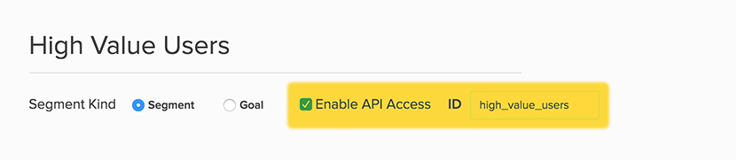

Pathfora gains power by seamlessly integrating with Lytics for real-time user identification. This allows for precise audience targeting with each module. Setting this up in Pathfora requires an object with certain targeting rules as the first parameter to initializeWidgets.
var modules = {
target: [
{
segment: 'smt_name',
widgets: [module],
},
],
};
pathfora.initializeWidgets(modules);
For audience targeting, it is required that you load the Lytics Javascript Tag. Pathfora interacts with this tag to retrieve the a list of Lytics audiences that the user is a member of. If you do not load this tag for targeted modules they will never initialize.
Setup Your Audiences
You will need to have at least one audience built in Lytics that you want to target with a module. Make sure that you have API access enabled for the audience, and have entered an ID. You will use this id in the targeting rules. 
target
A list of rules assigning modules to audiences.
| Key | Type | Behavior |
|---|---|---|
| target | string | list of targeting rule objects |
object in target array |
||
| Key | Type | Behavior |
|---|---|---|
| segment | string | API access ID of the Lytics audience |
| rule | function | A function that returns true or false based on if the module should show or not |
| widgets | array | list of modules to show the users in the audience |
rulefunction |
||
| Parameter | Type | Behavior |
|---|---|---|
| data | object | the user data returned from Lytics |
Single Target Audience - High Value Users
// example: show a bar module to all users in the `high_value_users` audience promoting new products
var module = new pathfora.Message({
id: 'targeted_bar',
layout: 'bar',
msg: 'Thanks for being a valued customer, please check out our new products.',
cancelShow: false,
okMessage: 'View Now',
confirmAction: {
name: 'targeted_bar_confirm',
callback: function () {
window.location.pathname = '/new-products';
},
},
});
var modules = {
target: [
{
segment: 'high_value_users', // API Access ID for your Lytics audience
widgets: [module],
},
],
};
pathfora.initializeWidgets(modules);
Multiple Target Audiences - New vs. Returning
// example: change messaging of module for new vs returning users
var newModule = new pathfora.Message({
id: 'new_slideout',
layout: 'slideout',
position: 'bottom-right',
headline: 'Welcome',
msg: 'You must be new here! Please take a look at our guide for new users.',
cancelShow: false,
okMessage: 'View Guide',
});
var returningModule = new pathfora.Message({
id: 'returning_slideout',
layout: 'slideout',
position: 'bottom-right',
headline: 'Welcome Back',
msg: 'Thanks for coming back, why not check out our blog for the newest updates?',
cancelShow: false,
okMessage: 'View Blog',
});
var modules = {
target: [
{
segment: 'new_users', // API Access ID for your Lytics audience
widgets: [newModule],
},
{
segment: 'returning', // API Access ID for your Lytics audience
widgets: [returningModule],
},
],
};
pathfora.initializeWidgets(modules);
User Attribute targeting
// example: show if user is from the US using the visit_country user field
var newModule = new pathfora.Message({
id: 'us_slidout',
layout: 'slideout',
position: 'bottom-right',
headline: 'Welcome',
msg: 'Greatings from America',
});
var modules = {
target: [
{
rule: function (data) {
return data.visit_country === 'US';
},
widgets: [newModule],
},
],
};
pathfora.initializeWidgets(modules);
inverse
Target all users who are not a part of any of the audiences in the defined targeting rules.
| Key | Type | Behavior |
|---|---|---|
| inverse | array | list of modules to show any user who is not a member of any of the audiences in the targeting rules |
// example: show a feedback form module to all users that are known (has email)
// and a subsciption module to everyone else
var subscriptionModule = new pathfora.Subscription({
id: 'sign_up_module',
layout: 'modal',
headline: 'Sign Up',
msg: 'We want to send you updates, sign up now!',
});
var feedbackModule = new pathfora.Message({
id: 'known_module',
layout: 'modal',
headline: 'Give us Feedback',
msg: 'What do you think of our newest updates?',
fields: {
name: false,
email: false,
title: false,
message: true,
},
});
var modules = {
target: [
{
segment: 'known', // API Access ID for your Lytics audience
widgets: [feedbackModule],
},
],
inverse: [subscriptionModule],
};
pathfora.initializeWidgets(modules);